sector88 supernovae (19 total)
Each figure has three panels. The top panel shows the transient light curve, the middle panel shows the local background (estimated in an annulus), and the bottom panel shows a "background-model corrected" light curve. Details about the background model are in the README.
The vertical red line marks the time of discovery reported to TNS. Other useful metadata from TNS is in the figure title.
Note that the top and bottom panel are in magnitudes, while the middle panel is in differential flux units. The magnitudes are calibrated to the flux in the reference image used for image subtraction. Thus, flux from the host galaxy is included in these magnitudes.
3-sigma upper limits are plotted as triangles with no errorbars. A typical limiting magnitude is 19.6 in 30 minutes or 18.4 in 200 seconds (for low backgrounds).
The links allow you to download the light curve data as a text file.
More details in the README.
2025wu
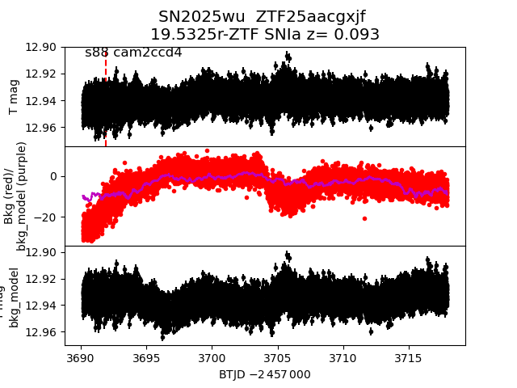
2025azh
 2025lw
2025lw
 2025akv
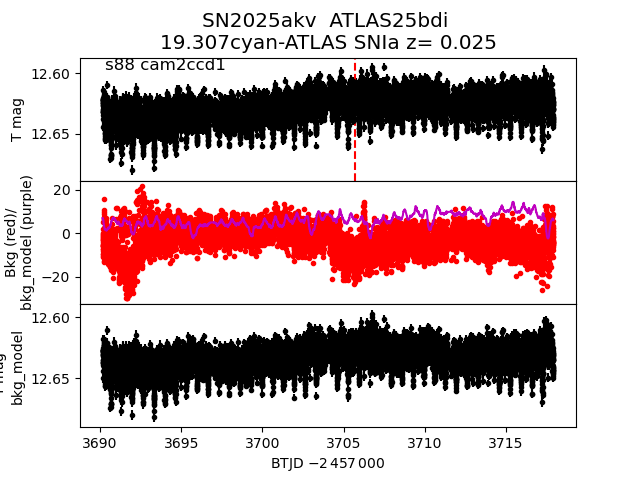
2025aks
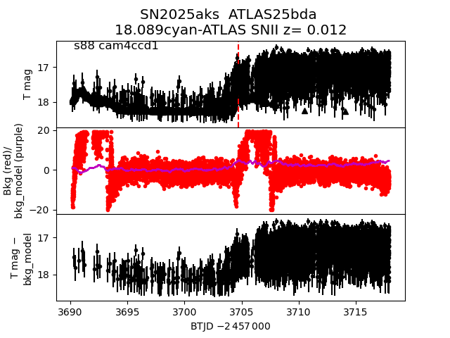
2025ayp
2025akv
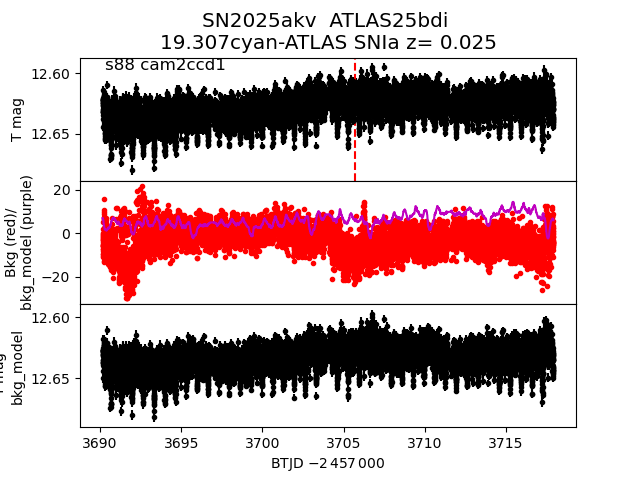
2025aks
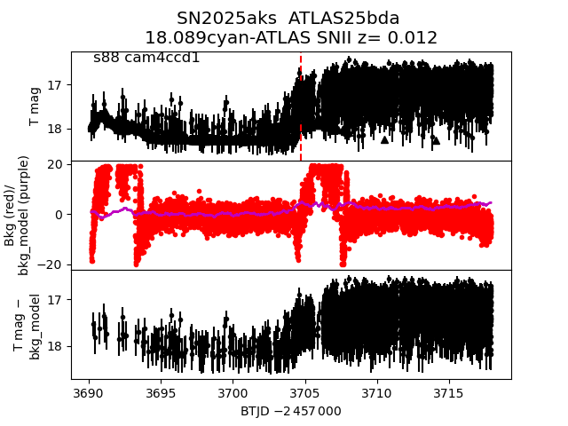
2025ayp
 2025wl
2025wl
 2025kk
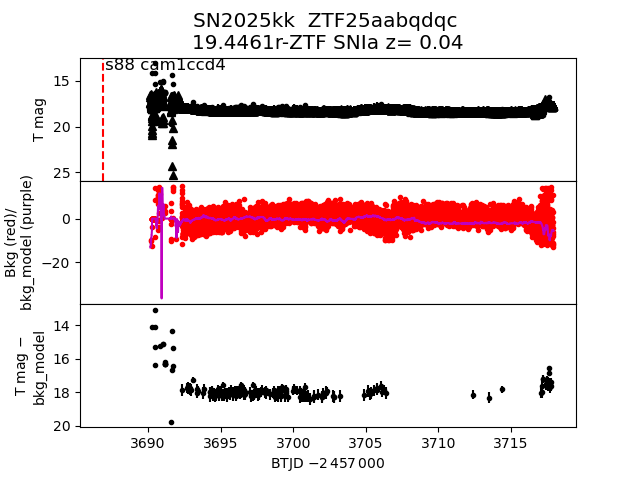
2025abb
2025kk
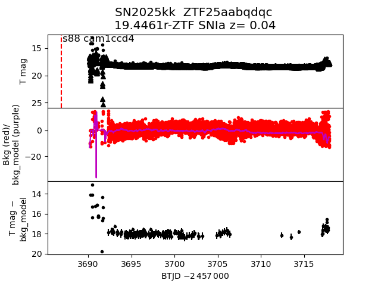
2025abb
 2025acn
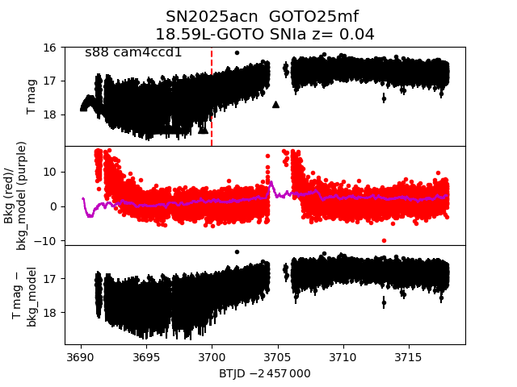
2025afx
2025acn
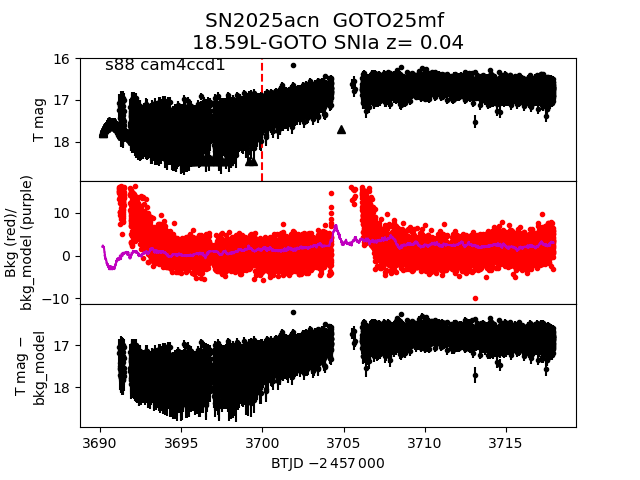
2025afx
 2025bdl
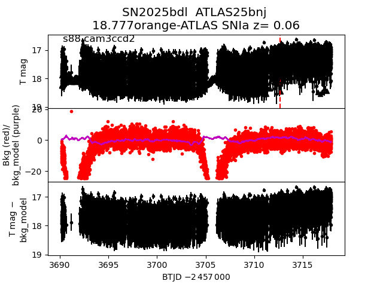
2025fpp
2025bdl
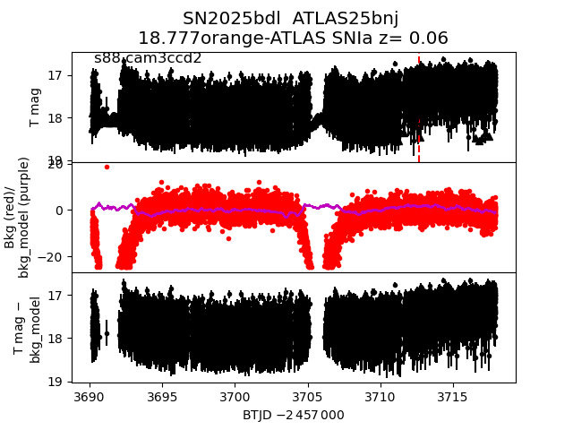
2025fpp
 2025aab
2025aab
 2025alk
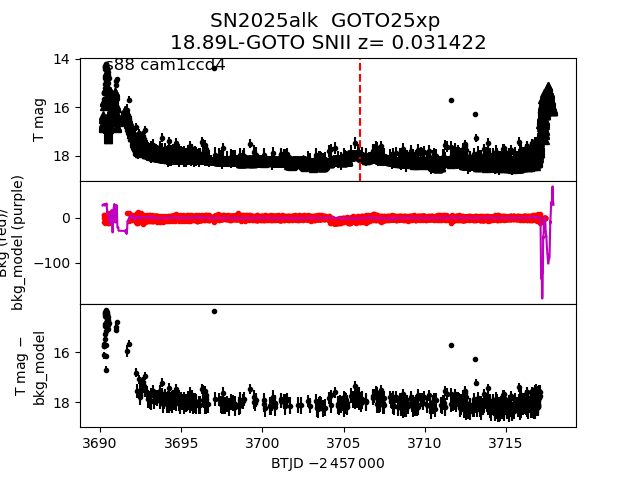
2025qr
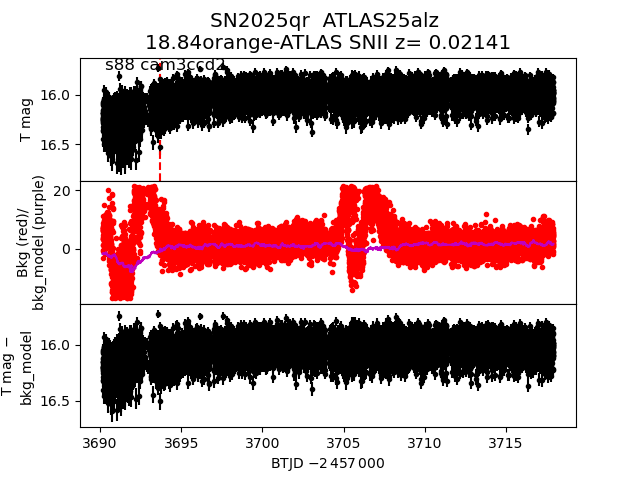
2025azf
2025alk
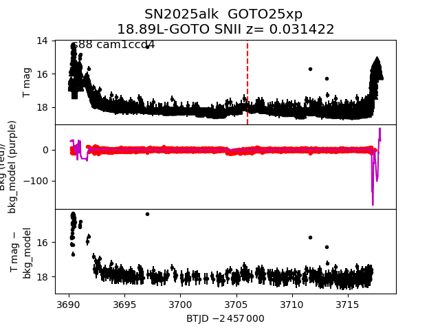
2025qr
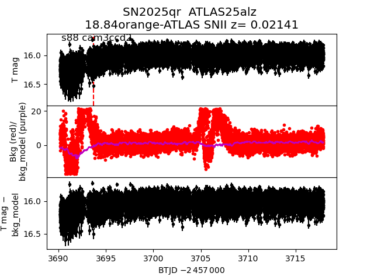
2025azf
 2025bqz
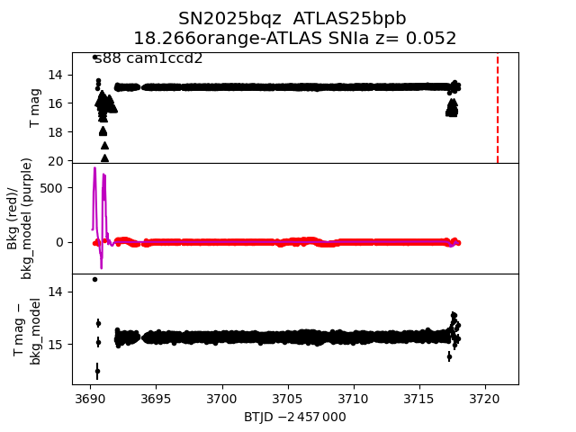
2025chq
2025bqz
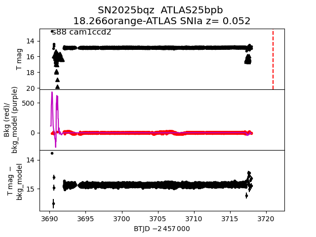
2025chq